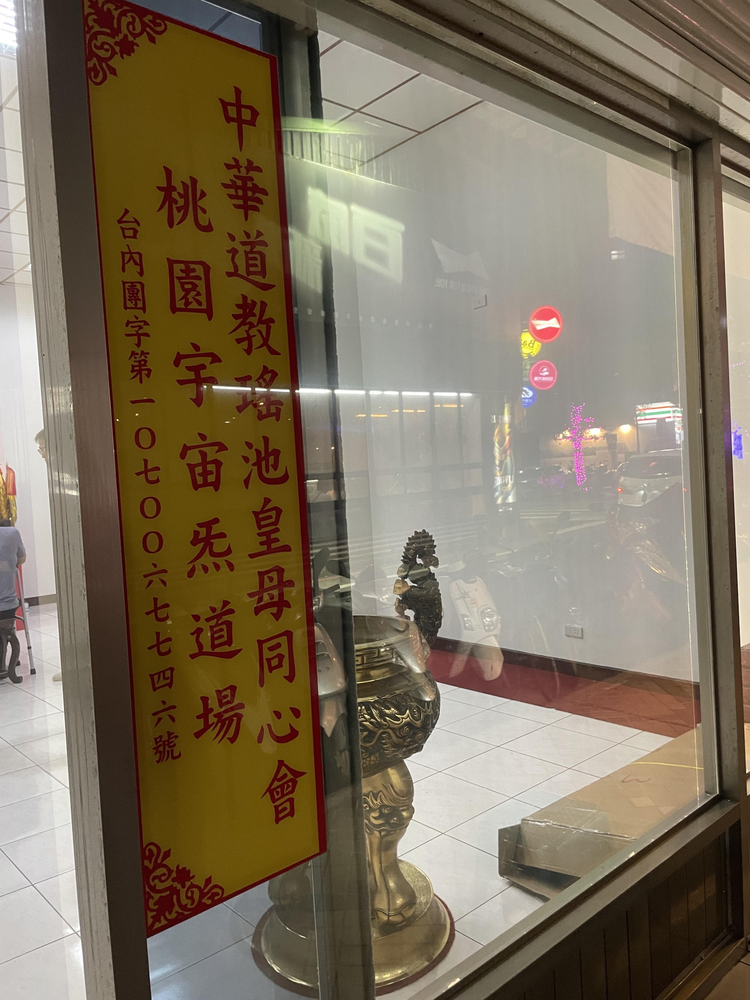
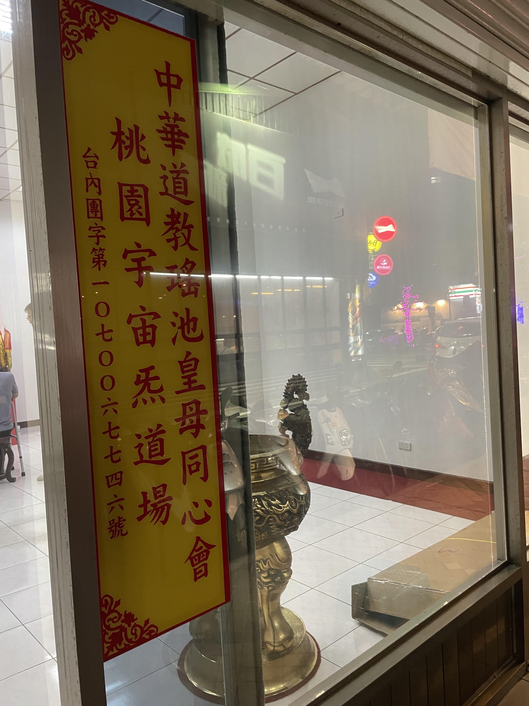

靈山聖地-九鳳山瑤台簡介
位處山明水秀是一塊好風水.好地理.左有青龍,右有白虎,背靠北陰陽,母座中央線,龍虎有交鎖,前有出水口.瑤台共四殿,中座無極九母至尊殿,左東三清殿,右西三寶殿,入口大梵寶殿,瑤台上玄玄宇宙殿,瑤台下地藏王寶殿及福德宮山神台,眾生得臨此聖地潛修.心曠神怡確為一塊好聖地.


為何要修皇母真道?
在現今社會.有許多宮廟,道場提供予人修行.修行方式各有不同.在此不便多贅言.既然有多種選擇.為何要皈依皇母門下修道?又有何差異? 皇母真道是一種內外兼修的修道法門(仁‵義‵禮‵智‵信).乃道堂上之仙佛以聖炁啟發凡人肉體內之元靈(元神).進而導引肉體修道之法.循序漸進.初學者虛心修練.可達[定心'定氣'定靈'定慧]之功.再者.以各人程度修行.求精進至超凡入聖.靠自身修與行.在皇母作主及見證之下.解救各人累世因果業障.最終目的則為[出神入化].返回皇母懷抱.免再受輪迴之苦. 本道堂旨在發揚皇母真道正修.非是修玄術.修神通.修行當中.雖未必能達[出神入化]最終目的.但外修亦可達練身健體之效.讓肉體在塵世能康健無病厄.是為{體自在}.內修則可從善却厄.悟出真理.種善因捨業果.是為{心自在}. 修道貴在心靈大智慧豁然真悟的剎那間.無關乎道行高低.謹以此心得分享給眾同道共修之師兄.師姐.期勉早日成就皇母大業!
位階與功果
神明並不如人們所認定的高高在上.無所不能.神明有許多位階.神明亦需修行.因此神.人是一種合作關係.人們求神明保佑.賜予妻財子祿.神明也要借助人.才能成其事功.修行者要明白[功與果]之分別. 神明選定一個代理人才能有所表達.但很不容易.首先那人得有通靈體質.其次心靈要單純.主觀不能強.有許多人終日跑靈山.為求通靈或增強通靈能力.而有貪念頭的人.就很難通到高靈.往往通的靈層次不高.甚至是阿里不達的鬼.導致精神出狀況.刻意求通靈的人.貪念已生.很難做個好通靈者. 許多通靈者都是天賦或無意間有此能力.開始都很排斥或害怕.常常經歷很辛苦的成長過程.最後才認同自己有此能力.肯與他們的指導靈合作.來利益眾生. 通靈者最容易犯的毛病是不長進.認為有神明加持.上知天文.下知地理.幹嘛要長進!反正神明說了就算.自己只要做個傳達意思的角色就可.但有時他們以自己的神明最大.而排斥其他通靈者.唯我獨尊的心態很重.忽略了有[人上有人].更忘了[神上有神]{甚至不知道}. 做神明代言人久了.很少會不貢高我慢.或起貪念而通不過.財.名.色的考驗.通靈者一如電腦硬體.神一諭軟體.電腦硬體不升級.軟體再好也是英雄無用武之地.所以一定要本體[三合一]才是皇母所言真.善.美.
元神與識神
什麼是元神?古人稱為(先天一點靈氣).老子謂之(靈根).堯夫謂之(天根).儒家謂之(天地之心).道家謂之(靈寶).釋家謂之(法身).醫家謂之(元神)。 元神就是人的真性.是生命活動的主要動能，元神具有很大的慧能.感知並接收外界的信息，具有很大的智能.能對外界的信息作適當的反應，具有很大的力能.操縱四肢.臟腑的運作，具有很大的思維能.而有想像力.創作力，元神可稱之為(靈)。 識神是指人類之智能、感官、知覺、情緒與慾望的意識活動,識神的構成很複雜.它具有父母遺傳的習性.及自身之業力的記錄.出生後學習的知識.處世的經驗等,識神有它獨特的個性.具備何種個性就會產生何種因緣.因此說(性空緣起),而識神帶有貪、瞋、癡三種思想.引來很多業力的因緣.也是肉體釀病的原因.所以說成佛成魔都是它.是好是壞.僅隔一線間。 太上清靜經說:(夫人神好清.而心擾之.人心好靜.而慾牽之.常能遣其慾.而心自靜.澄其心.而神自清.自然六慾不生.三毒消滅.所以不能者.為心未澄.慾未遣也). 人由先天元神降生.進入人體與胎合一.就產生了識神.元神退位.識神當道,所謂識神就是妄心.被外界所迷惑牽動之下.逐漸遠離真心真常,真靈元神是好靜的.可是經常由識神妄心干擾妄動.神不安寧.不能悟道,當妄心想要安靜時.又被外界的種種慾望牽著走.眼睛想看美好顏色事務.口想嚐美味.耳朵想聽美好妙音.身體好逸惡勞.想要穿金戴銀種種慾望.被慾望牽著走.漸離真道.慢慢流浪生死輪迴中,若能看透慾望.而淡化之.而主宰之.漸漸的就會讓心不受牽擾.能夠安靜.心能安靜下來.妄心不生起.識神慢慢消弱.元神自然慢慢浮現.而其方法就是.以戒律對治貪心,以定力對治瞋恨心,以智慧對治愚癡。
道統的由來
太上->太虛->太易->太初->太始->太無->太有->太素->太極->太象->八卦->現世界
青海崑崙山-西王母瑤池
瞭解更多 
